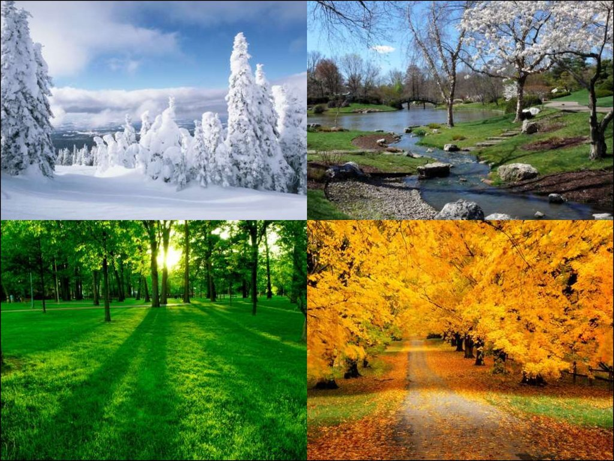
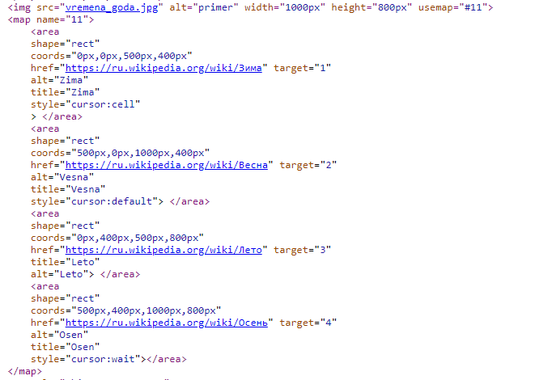

Tag Area
Тег (от англ. area - область) определяет активные области изображения, которые являются ссылками. Рисунок с привязанными к нему активными областями называется в совокупности картой-изображением. Такая карта по внешнему виду ничем не отличается от обычного изображения, но при этом оно может быть разбито на невидимые зоны разной формы, где каждая из областей служит ссылкой. Элемент задаёт форму области, её размеры, устанавливает адрес документа, на который следует сделать ссылку. всегда располагается в контейнере
Приведем пример ниже:

В теге необхоидмо указать usemap=#Значение
Далее прописываем
Teg area
shape=rect, circle, poly-многоугольник
coords- коодинаты, в зависимости от фигуры.
href="https://ru.wikipedia.org/wiki/Весна" target="2" - ссылка
alt="Vesna"
title
